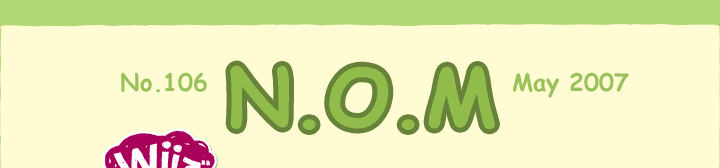
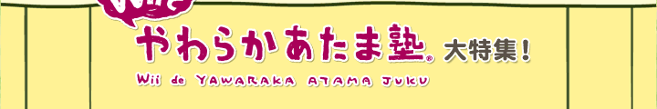
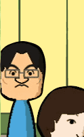
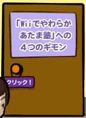
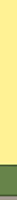
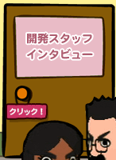
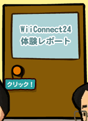
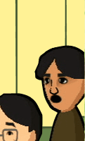
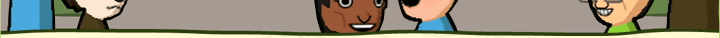

|  | ||
|  | ||
|  | ||
|  | ||
じつは去年の12月からニンテンドーＤＳの『健康応援レシピ1000 ＤＳ献立全集』を参考に自炊を楽しんでいます。作った料理は評価してカレンダーにどんどん登録、ついに4月でダブリなしの300レシピを達成です。また先日の上海旅行でも『旅の指さし会話帳ＤＳ（中国語版）』が見知らぬ土地で予想以上に活躍してくれました。ゲームで遊ぶ以外にも色々なシーンで役立つニンテンドーＤＳ、付き合いは1年ちょっとですが頼りになる相棒という感じです。 さて、今月号で紹介するのは『Ｗｉｉでやわらかあたま塾』という脳活性化ソフトです。ニンテンドーＤＳで2005年に登場した『やわらかあたま塾』とどんな部分が変わらず、どんな部分で変わっているのでしょうか。ＤＳ版とＷｉｉ版の両方に携わったスタッフに前から気になっていた「やわらかあたま塾」に対するギモンをぶつけています。そして舞台が Ｗｉｉに変わったことでどんな面白さが加わったのかを詳しく聞きだしてきました。また多人数プレイが楽しいソフトですから、大胆にもN.O.Mチームが開発チーム相手に、やわらか対決を挑んできましたよ。お楽しみに！ |
||
|